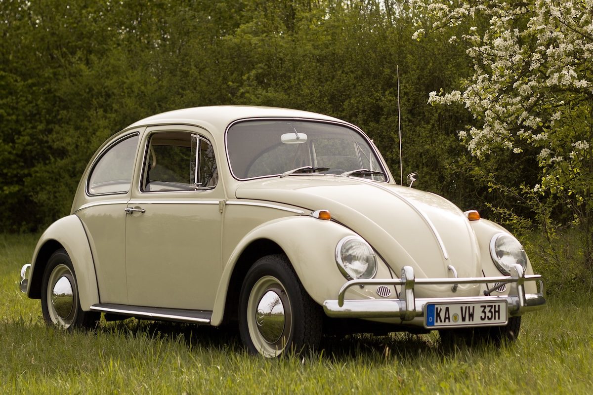

Opinions
This page contains my words on some of the topics of my interest and other issues that have caught my attention over time (no discussion of politics).
If you think 'reason' or 'logic' can solve humanity's problems, do yourself and me a favor and close this tab. My words here are not arguments, nor are
they reasoning. They simply reflect my beliefs, biases, and worldview; they are stances that would go beyond reasoning and analysis.
To categorize myself under the schools of thought, I can be associated with pragmatism, empiricism, skepticism, classicism, realism, and
behaviorism (in psychology). It follows that I side against rationalism, cognitivism, modernism (in art and music), and things
that become trends. I do not like to categorize myself with a bunch of “ism”s, but it was to give you a quick sense of my taste.
The following paragraphs can do a better job at describing my opinions on some topics.
Serious music can sometimes be found in what is known as classical. Outside classical, there is no serious music. Even within classical, most works are dull or painful to hear. For example, most works of modern classical music (post-1880s) are intolerable for sensitive ears. It is a self-inflicted pain if you try to understand most moderners.
Romantic (19th century) and classic (18th century) periods are better than modern, but most composers of that time still made bad music. Mozart is overrated; most of his music is only good for children. Beethoven stands in the middle as he can make good music; he sometimes does and often does not. Schubert is better.
Similar to painting, the music of the Baroque period (17th century) is the quintessence of music. Above all composers of that period, Bach stands as the master. Bach knows his job; composing music for humans! It is crucial to follow principles in any creation, especially in works of art, but Bach goes beyond principles. This is mastery. In short, Bach's creations are the greatest achievements of mankind in music so far. He has pieces that you can listen for your lifetime without getting repetitive.
Good music should be performed by master performers. Who can perform masterfully? The one who knows how to play a piece as it is; serious, without deviations or dramatizations. An example of a master pianist is Sviatoslav Richter (1915–1997).

Johann Sebastian Bach (1685 - 1750) |

Sviatoslav Richter (1915 - 1997) |
Examples of serious music pieces of my interest can be found in these pieces of Bach's creations: The Well Tempered Clavier by Sviatoslav Richter, the Harpsichord Concerto in D minor (BWV 1052), the Magnificat conducted by Karajan, the Mass in B Minor conducted by Karl Richter, the St Matthew Passion by Furtwängler or a more recent performance by the Netherlands Bach Society.
Here are some of my favorite movies and series.

Grapes of Wrath (John Ford, 1940) |

How Green Was My Valley (John Ford, 1941) |

The Shop Around the Corner (Ernst Lubitsch, 1940) |

The Best Years of Our Lives (William Wyler, 1946) |
Breaking Bad/Better Call Saul (Vince Gilligan and others, 2008 - 2022) |

Dogville (Lars von Trier, 2003) |
If, and if, filmmaking is an art, one should not try to analyze it. But if we were to analyze filmmaking, I would just say that my favorite movies were made according to the old-school principles of filmmaking. Some of those principles can be formalized as they are the technique of filmmaking. But the rest of the principles can only be learned by experience and training on the craft. Filmmaking is in bringing innovation within the boundaries of the principles.
Unfortunately, we see more and more cases in recent years that ignore the principles. Just take a cursory look at most of the films and series produced in recent years. They are suffering from ignoring the basic techniques of filmmaking. They follow empty trends. It is as though lacking principles has become a value for them. I am not hopeless as I still sometimes see decent movies and documentaries made recently.
To understand philosophy, one’s life should be accompanied with doubt and reflection. Attempts to learn do not help much; it should come naturally. This is a prerequisite.
The greatest achievements in philosophy were reached in the past; so, I am skeptical about philosophical discussions, discoveries, or progress in current times (20th century and afterwards).
Because my perspectives on certain topics in philosophy can be too detailed to be discussed here, I would leave them to another medium; maybe written articles (see references [12, 1 – 4] in homepage for some philosophical discussions). Suffice it to say that I have much homage to pay to the figures shown below.

David Hume (1711 - 1776) |

Friedrich Nietzsche (1844 - 1900) |

Arthur Schopenhauer (1788 - 1860) |

Ludwig Wittgenstein (1889 - 1951) |
If you are interested in a video channel for philosophy, Michael Sugrue (1957 – 2024) has good videos. They are available here.
Also, Bryan Magee (1930 – 2019) produced two series of interviews during the 1970's and 1980's with some figures of contemporary philosophy. I would recommend watching. They are available here.
I think it helps if I repeat what is commonly expected from academia: education and training. Yes, this is something we should remind ourselves of. Good academic institutions focus on teaching their students and prepare the environment for this goal, and this is regardless of the distinction between “research” and “teaching” schools.
Universities and colleges should be focused on teaching and advising students as their main priority. To achieve this goal, they need to have an academic type of people; those who are interested and are good at reading, learning, knowing, questioning, thinking, writing, speaking, and teaching. They should be excited about the topics of their interest, and enjoy spending time on those topics.
The statements above are not idealistic; they are minimum requirements for people in academia regardless of their field of study. Yet, it is increasingly difficult to find such people in academia. Many academic institutions are not taking their original goal seriously. Below, I just scratch the surface of some of the problems of many academic institutions today.
Most people who run today's academia are not of academic type. They do not have the tendency to think, do not have a writing style and clarity of presentation, and are not careful in their observations and inferences. They are people many of whom possess some or all of these characteristics:
• being committed to increase the number of their publications and similar statistics (like h-index in their Google Scholar) regardless of the quality of those works,
• judging other people and works with the number of publications, citations, or grants,
• having undue willingness to collaborate which can indicate their lack of independence,
• having undue interest in prizes, awards, certificates, and titles that are not necessarily awarded because of performance or professional achievements,
• creating unnecessary confusion in teaching or discussing subjects in their classes and meetings,
• lacking insight, even in their own field,
• lacking opinions or courage to express opinions,
• lacking honesty with their audience and with readers, and more importantly, with themselves,
• being indifferent to change anything in the world,
• lacking focus and being distracted with trivial topics and issues,
• following topics, affiliations, and tendencies that become social trends or are hot topics,
• designing their courses just to receive good student evaluations for the course, regardless of whether doing so can actually help students learning course materials,
• having interest in seeking connections that can be used to get grants, publish works, or get promoted,
• and adding names on research papers or grants as authors without sufficient contribution as a quid pro quo or as a favor,
And many more dishonorable characteristics. In short, academia has become bad business in many of our educational institutions. This is because, instead of the original goal, their attention has shifted toward how to improve a school’s rankings, increase the number of publications, and similar aims. The bigger problem, however, is that these behaviors are practiced in such a scale that have made them into norms, and consequently, no longer look unprofessional. Newcomers (e.g., assistant professors) often adopt the mentality of "other people do it, and so do I"; they establish a career on unethical premises. In an unhealthy competition for tenure or promotion, they become unprofessional professors. This situation is partly because many academic institutions put new items in their agenda (external grants, status in rankings, etc.). When the criteria of judging the performance of faculty are misplaced, the values would change and the result is what we see today on a mass scale.
A big culprit of the current situation is the funding that comes from federal funding agencies such as NSF, NIH, the military, and some other federal institutions. Based on my observations, federal grants go to universities and fund projects that are good-for-nothing. The results of those projects do not change anything in the world; not now, nor any time in future. By labeling their activities as "basic science", unprofessional professors and researchers waste billions of dollars of taxpayers' money, and that money is a big part of what sustains universities these days. It is no surprise that major universities only recruit those for faculty positions who can bring federal grants.
I should mention that during my time in academia, I have also seen serious academics who did not suffer from these problems. Good old-fashioned academics do not simply need to stain themselves with such practices, as their institutions judge their performance on healthy grounds. For my own academic responsibilities, my goal is to preserve what should be kept good in academia.
Likewise, I believe there are academic institutions who still have their principles, respect themselves, and are not polluted by these problems. I think it is important to define, recognize, and distinguish the academic from un-academic characteristics with the hope to stop unhealthy trends, reinstate old values, and improve our academic institutions.
Consumer Products
From design to selecting the raw materials and finishing, certain principles should guide the production process. Generally speaking, products have become cheaper over time, both in quality and design. Just look at the pictures below. These products followed the principles of standard manufacturing. Look at products in the same categories nowadays; they are cheaper in quality and design compared to their predecessors. It is sad to see that principles of production, from design to manufacturing, are hardly practiced these days, and companies cut corners left and right and only care about short-term profit.

Revere Ware Cooking Pans (manufactured pre-1969) |

Morphy-Richards Iron (manufactured in 1950's) |
This is a crisis. Why? Standard-quality products are disappearing. For many types of products (e.g., sneakers, kitchen appliances), either you should buy cheap products that are easily available in the market, or you should go to the warehouse of your parents and grandparents to see if you can find good-old products. Over time, online and offline retailers like Walmart and Amazon have become the selling agents of cheap manufacturers or well-known brands who manufacture overseas for cheap labor. Most good-old manufacturers who manufactured domestically (in the US and Europe) faced bankruptcy years ago.
Vehicles
Automobile industry is a good example of how western manufacturing and design reached its peak years ago (70's - 90's) and moved downwards since then. The external design of automobiles, which I care alot, has been particularly degraded. Look at some examples in the photos below. The design was functional, serious, and decent. All parts of the external design are in their proper place and in proper size.
|
Cadillac Seville (1976 - 1979) |
Cadillac DTS (2005 - 2011) |

Volkswagen Beetle (1938 - 2003) |
The emergence of the ugly universal automobile design and manufacturing happened during the 90’s—the same time that the automobile industry in the US and Europe started its decline (both in profit, and in design and quality). Look around and see the external design of newer models (especially post 2010's). Beside the problem of shape and external design, the quality of the materials that are used inside the cabin is lower than before. If you have a new car, just pay attention to the cheap plastic and other composite materials in the dashboard, steering wheel, doors, and handles. You should only be rich to buy a car with standard-quality cabin materials. This was not the case for older models (pre-90’s). The same goes to the mechanics of the cars. Nowadays, automobiles are full of unnecessary electronics that would not only make them more prone to total failures, but would make the owners go to dealers for any service. If I were a mechanic, I would have quit my job a long time ago. In short, almost everything in the auto industry was better prior to the 2010’s.
I found that one of the main reasons behind this de-evolution is government regulation and incentives. For example, the government required manufacturers to make their automobiles “safer” both for passengers and for pedestrians. Also, the government decided to regulate fuel consumption. In doing so, automobiles had to follow some uniform guidelines to increase “safety” and fuel efficiency. That is why, for example, passengers’ window areas became smaller, back sections were raised, and the internal materials became lighter and cheaper.
In fact, the government decided a big part of what automobiles look like today. I doubt if those regulators investigated, for example, the increased danger that lowering the driver’s visibility can create because of narrower windows. At the same time, manufacturers added unnecessary and bothersome “features” to automobiles such as big touch-screens in dashboards, driver assistance and guidance, and cameras that show the surroundings to the driver and passengers. If you are interested in these features, I have nothing to tell you. The least I can say is that they are unnecessary and bothersome, if not dangerous. When manufacturers do not (or cannot) have innovation in key areas of design and functionality, it is no surprise that they would try adding these unnecessary features.
So ...
In short, if there is any remaining manufacturer of standard-quality products in the West, the price tag of their products will be astronomical. This is in part because those products are rare. The same products were much cheaper in the good-old days. It is interesting to see that the economic and business system that was supposed to favor consumers by reducing the prices have actually resulted in a sharp increase in prices of the same quality—indeed, only if you can still find those products in the market.
This is a crisis. The crisis of not having decent manufactured products, and not producing them. The power of manufacturing industrial products is crucial for any healthy society, and this power is being taken away from the West by bad policies and governments.
There are rules and principles in any art and craft. The rules and principles come from years of practice, as well as a healthy social and economic environment. Those principles guide human appreciation of beauty, harmony, and quality. Innovation and the art of creating "new" works should be in following the rules and principles, not in ignoring them. It is unfortunate to see that in our society today, unprofessional practitioners often ignore the rules and principles. Many people are not in their proper positions, and many organizations are not producing products and services that they should.
In what I discussed above under different topics, the concept of decency and seriousness would embody my interests; decent works of art, decent academics, and decent products. I am skeptical about things that become “trends”. Many trends and “modern” products are the result of ignoring principles; the principles that would require the creators to practice for years to learn how to create, teach, produce, and manufacture. Indeed, practice needs patience; what old-timers had, but many moderners lack.
Most of who I am is indeed influenced from my childhood; particularly my father. And I will never forget the beautiful memories that I have from my hometown.

My Father |

Rasht, Iran (my hometown) |